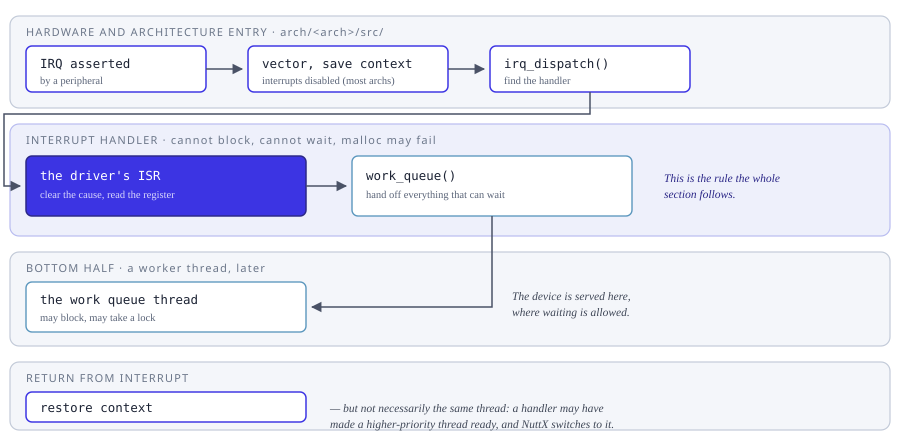

Interrupts
How NuttX takes an interrupt, what an interrupt handler may and may not do,
and how code protects itself from one. The code lives in sched/irq/,
with the vector table and the entry sequence in
arch/<arch>/src/.
On most architectures an interrupt handler runs with interrupts disabled – nesting is the exception rather than the rule, and Nested Interrupts covers it – and on every architecture the handler cannot block. That is the whole reason the rest of this section exists: anything that has to wait, allocate or take a lock has to be handed off, which is what bottom halves and the work queues are for.


From the peripheral asserting the line to the return, and where the work that cannot be done in a handler goes instead.
The last step is the one that surprises people: returning from an interrupt does not necessarily return to the thread that was interrupted. A handler often makes a higher-priority thread ready – that is usually the whole point – and NuttX switches to it before the interrupted thread runs again.
For protecting a section of code, note that disabling interrupts and locking pre-emption are not the same choice and do not cost the same. See Critical Sections for the difference, and Effects of Disabling Interrupts or Pre-Emption on Response Latency for what each one does to response time.